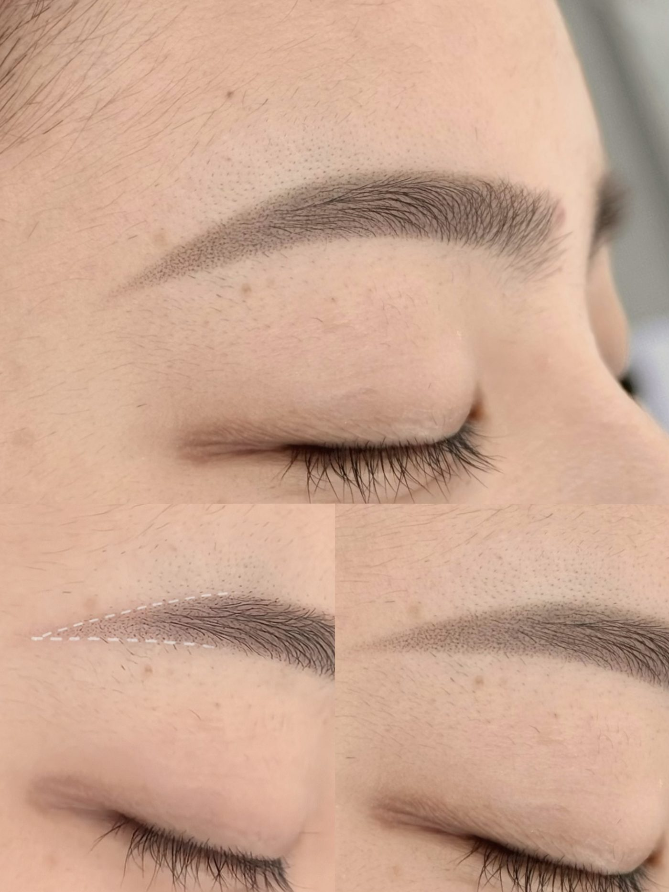
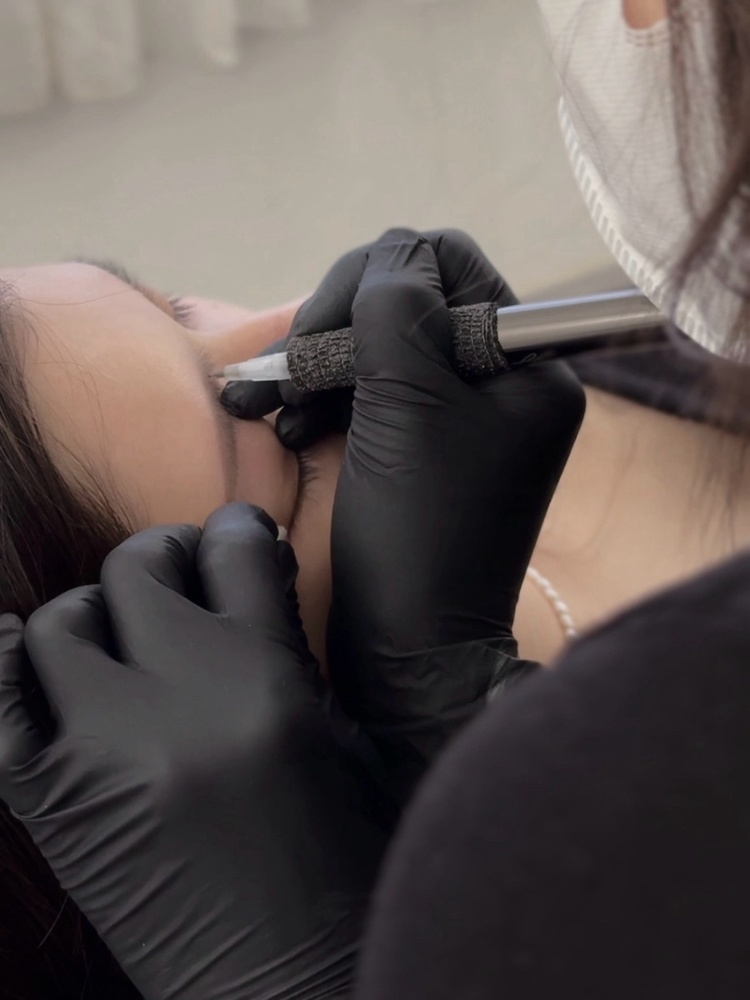
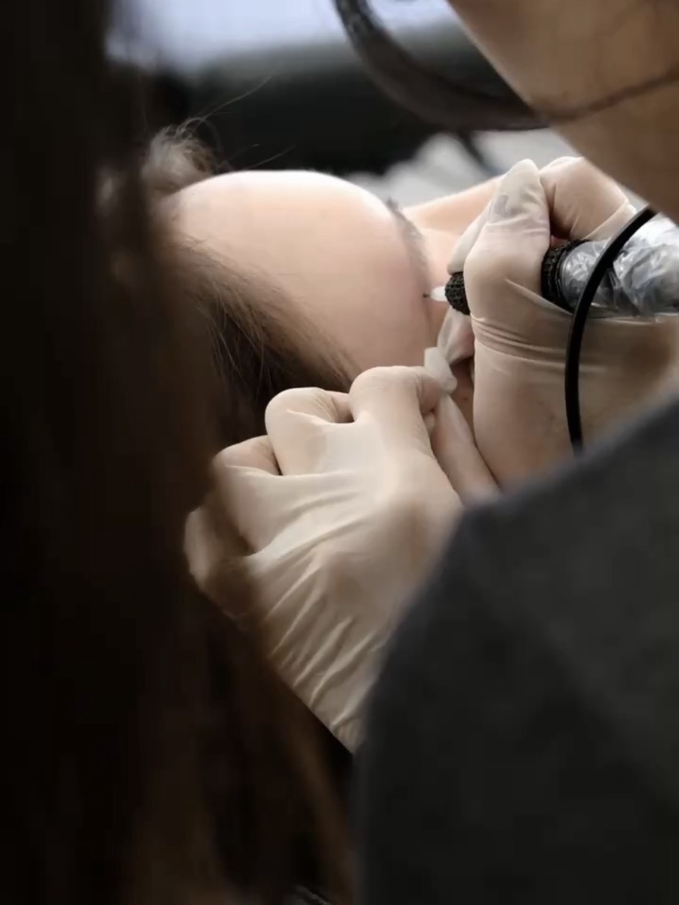

Services & Pricing
價格已含當次設計與諮詢。看不懂自己適合哪一項？下方有說明，或直接用 LINE 問我。
Which one
About the service

以點狀、毛流的方式，做出像眉粉輕刷過、又帶自然毛感的眉型。操作前會先和你確認臉型、原生眉與日常上妝習慣，溝通好理想眉型後才開始，不會做出生硬尷尬的眉。歡迎帶喜歡的眉型照片一起討論。
維持大約 1～2 年，會依個人代謝自然淡化，後期只需補色即可。

